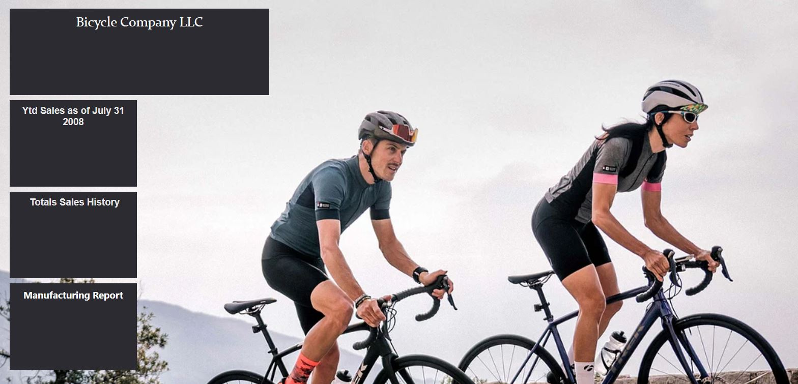

A Sql project answering ad hoc style questions using a companies employee record database. This project showcases some of my advanced sql knowledge.

Place Holder for upcoming project.

A simple multiple dashboard design for Covid 19 Data in NYC covering January 2023 until April 2023.

My Tableau Public homepage where you can explore other visualizations and dashboards I have created.

A dashboard and reports created in Microsoft Power Bi using different styles and visualizations.

Main page of my Github Repository for you to explore other projects I have completed in python, sql, and R.